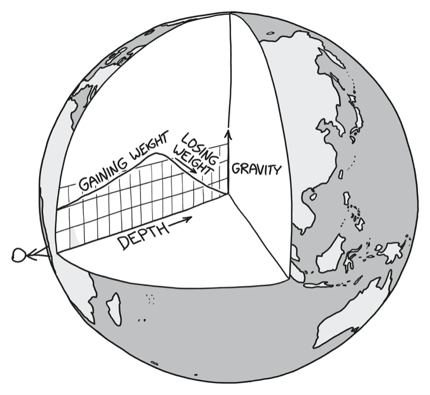
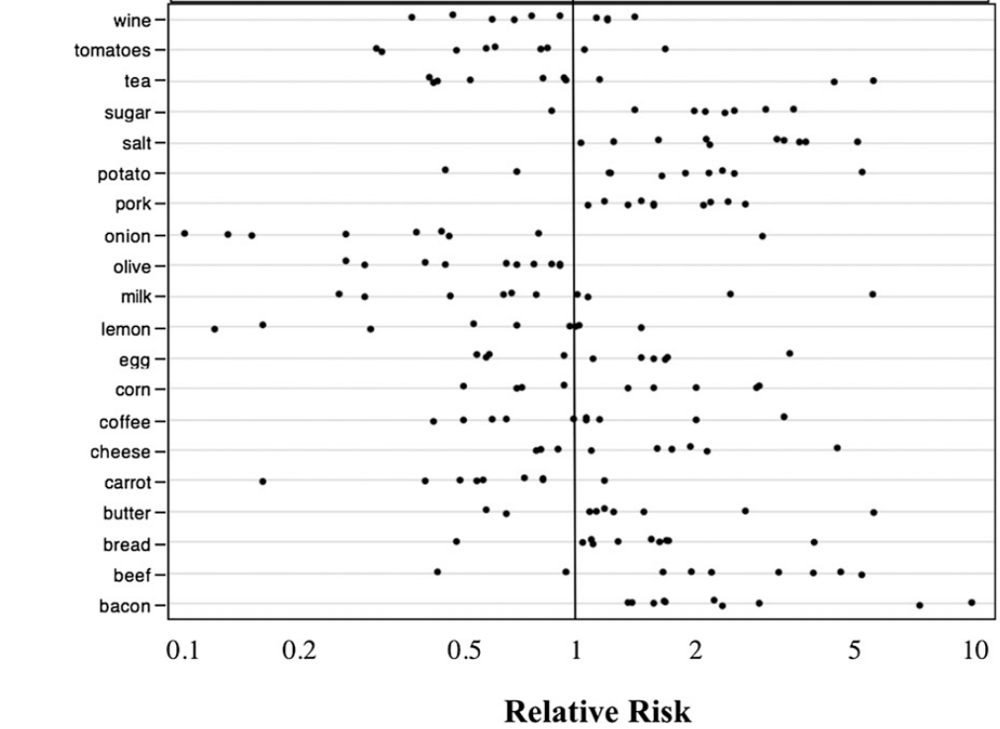
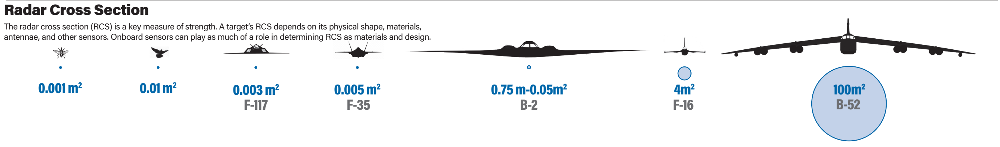
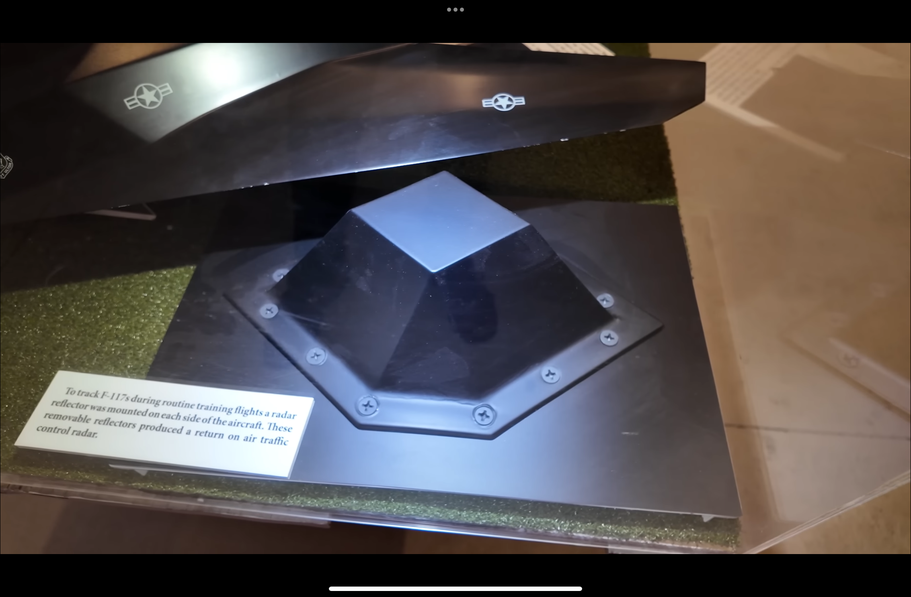

Things I Learned Misc
· 12 min read
I’ve been doing the Things I Learned thing for a couple of years now. During the year, I save links in a note, then turn them into a post at the end of the year. I don’t remember how it started, but I also have a note titled Things I Learned Misc. I guess these are things that didn’t make it into earlier posts, or that I simply never got around to including. Having this note has been bugging me for a while, so I’m publishing these items now and finally deleting it 😄.
2021
-
Our night vision is most sensitive at 505 nm (blue-green light) 👀🌅.
-
Creationists disagree over which version of Genesis gives the “correct” chronology 📜. From Arguments we think creationists should NOT use
“The Septuagint records the correct Genesis chronology.”
Careful research suggests that the Masoretic Text, supported by Jerome’s Vulgate and by Bede, is closest to the original manuscripts, while the Septuagint seems to have been systematically inflated.
-
Electrical waves can spiral through the heart and sustain an arrhythmia 🫀.
-
The Achaemenid Empire was once larger than any empire before it 🏛️. At its height, it stretched from Egypt and Anatolia through western and Central Asia to the Indus Valley. Darius I introduced a standard imperial currency of gold darics and silver sigloi.
-
Dendronization: evolving a tree-like form. Poaization: evolving a herbaceous form 🌳🌱. Georgia Ray proposes the two terms in the spirit of carcinization, the repeated evolution of crab-like forms. See also There is no such thing as a tree.
-
From that same blog post: Axolotls can metamorphose from an aquatic form into a terrestrial one 🦎. Axolotls normally mature and reproduce while retaining larval features, including their external gills. This retention of juvenile traits is called paedomorphosis. Rarely, or following thyroid-hormone treatment, they undergo metamorphosis: they lose their external gills and develop a body suited to life on land.

An axolotl retaining its larval features (left) and a metamorphosed axolotl (right). Credits: left, th1098 (CC BY-SA 3.0); right, a Reddit contributor whose account was deleted, via Georgia Ray. -
Avocados and cinnamon are members of the same plant family 🥑🌿. Yes, Georgia Ray’s blog post has been really fruitful (pun intended) 😄.
Bonus: The apple–peach common ancestor might not have been a tree 🍎🍑.
-
Seattle’s Magnolia neighborhood was misnamed after the local madrona tree, which Europeans confused with the (similar-looking) magnolia 🌳. Maybe you should just read the whole thing; it’s fascinating!
-
Plants from different lineages have independently become succulent 🌵. OK, this is the last one. Cactuses and aloe vera, for example, are not related to each other.
-
Mercury is our nearest planetary neighbor, but it’s the hardest to visit 🪐🚀. Venus still comes closer at its closest approach, but Mercury is closest to Earth on average. Since a spacecraft inherits Earth’s orbital motion, it has to lose a lot of orbital energy to move into Mercury’s smaller orbit around the Sun. Falling toward the Sun makes it speed up, so it must also brake relative to Mercury to be captured into orbit rather than fly past.
-
Germany’s tractor tax break dates back to 1922 🚜. These subsidies include cheaper diesel for agricultural use and a vehicle-tax exemption for farm vehicles. The exemption was originally meant to help farmers replace horses and donkeys with motorized machinery.
-
Those circular fields you see from above get their shape from center-pivot irrigation 🟢🚰.

A satellite image of circular fields characteristic of center-pivot irrigation in Kansas. Credits: NASA (public domain). -
Bulgarian choral music inspired Ghost in the Shell’s chorus 🎶. Have a listen to Le Mystère des Voix Bulgares.
-
Similar crocodilian skull shapes have evolved independently more than once 🐊. Despite their reputation as “living fossils,” modern crocodiles are evolving rapidly.
-
Climacteric fruits keep ripening after harvest; non-climacteric fruits generally don’t 🍌.
Ethylene is the gaseous plant hormone that helps trigger ripening. In climacteric fruits, it stimulates further ethylene production, allowing ripening to continue after harvest. Non-climacteric fruits need to be picked ripe.

Examples of climacteric fruits and non-climacteric fruits. Credits: Annabelle Capino and Macarena Farcuh, University of Maryland Extension. (Via MinuteEarth)
-
Shark lineages existed before the first trees 🦈🌳.
The earliest fossil evidence for sharks or their ancestors are a few scales dating to 450 million years ago, during the Late Ordovician Period.
The earliest shark-like teeth we have come from an 410-million-year-old, Early Devonian fossil belonging to an ancient fish called Doliodus problematicus. Described as the “least shark-like shark”, it’s thought to have risen from within a group of fish known as acanthodians or spiny sharks.
By the middle of the Devonian, 380 million years ago, the genus Antarctilamna had appeared, looking more like eels than sharks. It’s about this time that Cladoselache also evolved. This is the first group that we’d recognise as sharks today
The Carboniferous Period, which began 359 million years ago, is known as the “golden age of sharks”.
Bonus: Shark lineages may even be older than Saturn’s rings 🦈🪐.
-
Trees existed for 60 million years before anything evolved to digest cellulose 🌳■. That’s how we got coal, though this lignin hypothesis is not without objections and substantial counterevidence.
-
A kidney transplant usually leaves your old kidneys in place 🫘.
-
Emma Morano, the last verified living person born in the 1800s, died in 2017 👵.
In 1899, when Emma Morano was born…
- The first powered, controlled, sustained airplane flight was still four years away.
- Austria-Hungary and the Ottoman Empire still existed, and Korea was still one country, then called the Korean Empire.
- China was still ruled by the Qing dynasty; its last emperor would not abdicate until 1912.
- Theodore Roosevelt had fought in the Spanish-American War the previous year, but had yet to become president. He was then governor of New York.
- No human had yet reached the geographical South Pole. Amundsen’s party would get there in 1911.
- Many of the men who would fight and die in the First World War were still children.

Emma Morano in 1943, aged 43. Credits: unknown photographer, via Wikimedia Commons (public domain). -
A million seconds is about 12 days; a billion seconds is about 32 years ⏱️.
If you make $50,000 a year, it will take you 20 years to make your millionth dollar. It will take you 20,000 years to make your billionth dollar.
Another way to picture the difference: imagine a staircase where each step is about 20 cm high and represents $100,000 of net worth. A millionaire is ten steps up, just over two meters above the ground; a billionaire is already 2.032 km up. At the end of 2020, an estimated 87.8% of the world’s adults had not reached the first step, another 11.1% stood between steps one and ten, and 1.1% were above step ten.
As of October 2026, Forbes estimates Jeff Bezos’s net worth at $374.1 billion, putting him about 760 km up this staircase. Elon Musk became the first trillionaire in Forbes’ records on June 12, 2026, with an estimated $1.1 trillion, about 2,235 km up. For comparison, the International Space Station orbits at roughly 400 km.
Even if you’d earned $10,000 a day since 80,000 BC, you still wouldn’t be as rich as Elon Musk.
-
Bonus: She also lived closer to the release of the iPhone Duo than to the construction of the Great Pyramid.
Another bonus: T. rex lived closer in time to us than to Stegosaurus 🦖. (T. rex lived about 69–66 million years ago, while Stegosaurus lived around 150 million years ago.)
(Via LobotomistPrime and polymorphiced)
-
The eye has “immune privilege,” but it can still suffer autoimmune inflammation 👁️.
-
Australia is wider than the Moon’s diameter 🇦🇺🌙. Australia spans roughly 4,000 km from east to west, compared with the Moon’s diameter of about 3,475 km.
-
In Munch’s The Scream, it’s nature that’s screaming 🎨. Munch described the experience in his diary:
I stood there trembling with anxiety and I felt a great, infinite scream through nature.
-
Flamingos are born with a straight bill 🦩.

Flamingo chick, Smithsonian’s National Zoo, August 2012. Credits: Jim Jenkins, Smithsonian’s National Zoo (CC BY-NC-ND 2.0). -
“Fancy-schmancy” is an example of shm-reduplication. It originated in Yiddish, which explains why shm-reduplication is used in both English and German.
-
A shibboleth is a word or pronunciation that can give away your group or region 🗣️. A few German examples:
- “Sonne”: the initial s is often voiceless [s] in southern Germany and voiced [z] in the north.
- “Schornsteinfeger Stefan fischt im Nest nach Wurst”: depending on the dialect, up to four st clusters can sound like scht.
- “Der Stadtbremer ist über den spitzen Stein gestolpert”: traditional Bremen pronunciation keeps sp and st where Standard German uses schp and scht.
- “Schwarzwälder Kirschtörtchen,” “griechische Geschichte,” and “tschechischer Tontechniker”: these test the distinction between the soft ch [ç] and sch [ʃ], which merge in some regional varieties.
-
Some spots mistaken for blackheads are normal sebaceous filaments. Sebaceous filaments are normal sebum-associated structures; blackheads are clogged pores, also known as open comedones. The terms aren’t interchangeable.
-
Some languages use different words depending on whether the speaker is a man or a woman 🗣️.
Chukchi is an endangered language spoken by 5,000 people in East Siberia. The Chukchi language is made up of two gender-based dialects, one for men and one for women. The differences between the two dialects are mostly phonetic. For example, women typically substitute the ts sound for ch and r. So “ramkichhin,” which means “people,” is pronounced as written by men and as “tsamkitstsin” by women.
The Garifuna people currently live in Central America, but they originally come from the Caribbean islands of St. Vincent and Dominica. Long before Europeans “discovered” those islands, they had already been the scene of brutal conquest. The people who originally made their homes there were Arawakan and spoke an Arawakan language. But groups of Carib warriors conquered them, killed most of the men, and took the women as wives. The women spoke Arawak to their children, but their fathers taught the boys their Carib language once they were old enough to help work.
-
The gap between high and low US wages narrowed during the Great Compression 📉. From 1950 to 1980, inflation-adjusted incomes rose for both the bottom 20% and the top 5% of US families, with larger percentage gains at the bottom.
-
If a Zeiss EUV mirror were the size of Germany, its biggest imperfections would be less than a millimeter high 🪞. It takes months to measure and smooth the EUV mirrors, using ion beams to remove tiny amounts of material. At that same scale, a bathroom mirror would have bumps five meters high. Earlier space-telescope mirrors by Zeiss would have bumps two centimeters high.
2026 addendum: I’ve learned a lot about EUV, though my understanding is still pretty superficial. Asianometry has a couple of great videos. For an accessible and fascinating introduction, try this Veritasium video.
Thorsten Hellert’s 38C3 talk, From Silicon to Sovereignty also covered a couple of things that stuck with me:
- The light source fires two laser pulses at each of 50,000 tiny tin droplets per second to create EUV light. (Update: it’s three laser pulses now.)
- Adaptive optics reshapes the mirrors’ surfaces with precision comparable to aiming a beam from Earth at a golf ball on the Moon. (Update: the precision is now comparable to aiming a laser from Earth at a coin on the Moon… and choosing which side of the coin to hit.)


2022
-
The ampersand “&” is a ligature of e and t, from Latin “et” ✍️.
-
The 1889 “Russian flu” is among the deadliest pandemics in history 🦠. When COVID-19 hit, it felt like everyone suddenly “rediscovered” the Spanish flu of 1918–1920. Here was a pandemic that had killed more people than WWI, yet somehow barely featured in our collective memory. How had so many of us never even heard of something that deadly? Now, in 2026, I feel like we’re already starting to forget COVID too, but that’s beside the point. What really surprised me was learning about another major pandemic I’d never heard of, just 30 years before the Spanish flu. The 1889–1890 pandemic was the last great pandemic of the 19th century, killing about 1 million people out of a world population of about 1.5 billion.
Researchers initially thought the pandemic was caused by an influenza virus. But since the 2002–2004 SARS outbreak, and especially since COVID-19, researchers have proposed a coronavirus as the culprit.
-
The observable universe is very large 🚗🌌. Driving to the edge of the observable universe (~46 billion light-years) at 100 km/h would take about 10^17 years. That is enough time to watch the entire life of every human who has ever lived (more than 100 billion people) in real time, one after another … 150 times! By the time you finished watching, you’d still be less than 1% of the way to the edge of the universe.
-
Peeling away Earth’s outer layers would initially make you weigh more 🌍. Earth’s interior is much denser than its crust. Moving closer to the dense core more than offsets the mass you remove. Gravity keeps increasing until roughly 3,000 km down, then falls toward zero at the center.

Gravity as you go deeper into Earth. Illustration: © Randall Munroe, What If? 2 (2022), p. 85. -
Even an enormous magnifying glass cannot start an ordinary fire with moonlight 🌙🔥.
2023
-
For many foods, you can find studies reporting both higher and lower cancer risk 🍽️.
Jonathan Schoenfeld and John Ioannidis picked 50 ingredients from a cookbook and found cancer-risk studies for 40. Many individual studies reported large effects based on weak evidence; pooled estimates in meta-analyses were generally smaller. Some apparent contradictions also involved different cancers or amounts eaten. Cherry-picking individual papers can make the same food look good or bad.

Individual studies’ estimates of cancer risk for 20 foods. Source: Schoenfeld & Ioannidis (2013). © 2012 American Society for Nutrition. (Via Martin Moder)
-
Stealth aircraft like the B-2, F-117, and F-35 have incredibly small radar cross-sections ✈️.

Radar cross-section comparison from B-2 at 30: Improving with Age, Air Force Magazine, July/August 2019, pp. 36–37. Graphic by Dashton Parham and Mike Tsukamoto. Cropped and isolated from the magazine infographic. Click to enlarge. Bonus: During routine training flights, F-117s carried small removable radar reflectors. These boosted their radar return enough for air traffic control to track them.

A removable F-117 radar reflector.